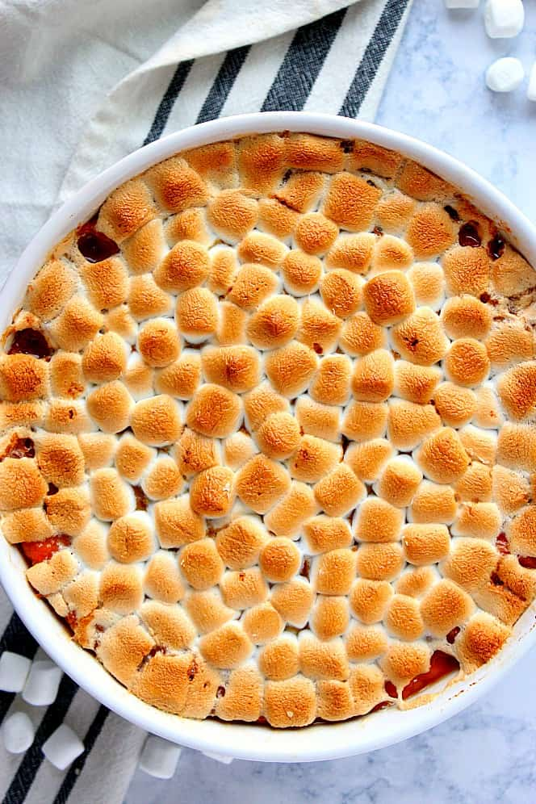

Sweet Potato Casserole

Sweet potatoes topped with creamy toasted marshmallows.
Ingredients:
- 5 sweet potatoes, sliced
- ¼ cup reduced fat margarine
- ½ cup packed brown sugar
- 3 tablespoons orange juice
- 1 pinch ground cinnamon
- 1 (10.5 ounce) package miniature marshmallows
Steps:
- Preheat oven to 350 degrees F (175 degrees C).
- Place sweet potatoes in a large saucepan with enough water to cover. Bring to a boil, and cook until tender, about 15 minutes. Remove from heat, drain, and mash.
- Place mashed sweet potatoes in large bowl, and use an electric mixer to blend with the margarine, brown sugar, orange juice, and cinnamon. Spread evenly into a 9x13 inch baking dish. Top with miniature marshmallows.
- Bake for 25 to 30 minutes in the preheated oven, or until heated through, and marshmallows are puffed and golden brown.
Home